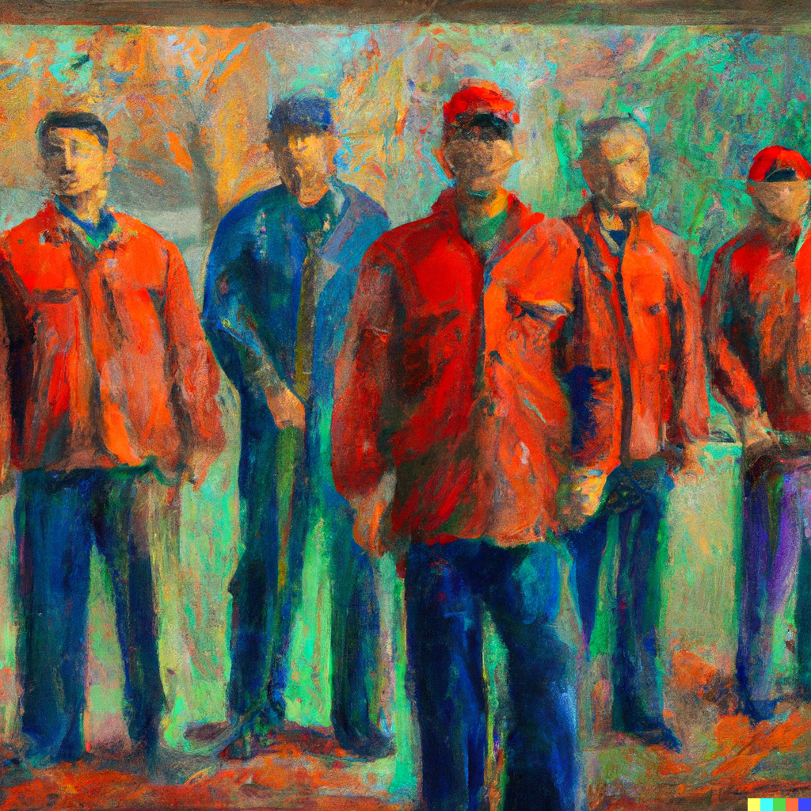

About Labor Link
Labor Link is a browser plugin that aims to drive change in the labor movement by initiating and promoting open and constructive discussions about worker exploitation. One of its key features is the ability to share existing labor violations with users once they visit a company's website, sparking conversations and raising awareness about unethical labor practices. By demanding accountability from companies that engage in such practices, Labor Link makes a company’s history of violations visible to all potential online consumers. This exposure serves as a powerful incentive for companies to ensure that their workers are treated fairly and with respect.